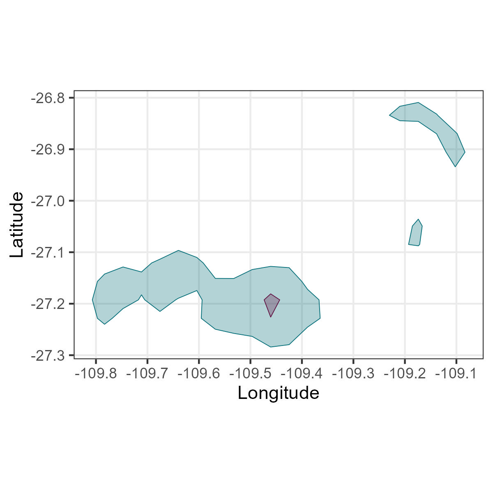
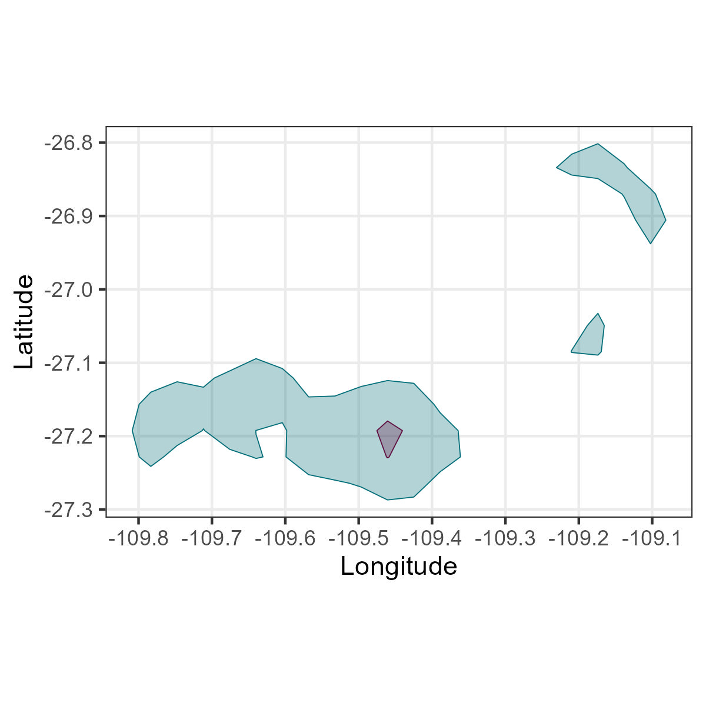

#devtools::install_github("MiriamLL/sula")
library(sula)
GPS_raw<-(GPS_raw)Kernel UD considerations
R
biologging
English
Y2022
Some things to consider before making kernel density estimations.
Intro
This post is to exemplify some considerations when calculating kernel density analyses.
Before start calculating kernel density analyses, its useful to consider some sources of error that might change your results.
For the exercises, test data is from masked boobies.
To access the data you have to install the package sula: devtools::install_github(“MiriamLL/sula”)
To manipulate the data we will use functions from the package tidyverse
library(tidyverse)For spatial manipulations we will use functions from the packages sp and sf
library(sp)
library(sf)For creating the polygons of kernel density we will use the package adehabitathr
library(adehabitatHR)Individuals
Some individuals might drive kernel density calculations in one or other direction as effect of different number of recordings (or days recorded) per individual.
Unpaired
To illustrate this, lets see the calculations using together one individual sampled for 1 day and other for 5 days
Individual one day
ID_1day<-GPS_raw %>%
filter(IDs=='GPS01') %>%
filter(DateGMT %in% c('02/11/2017'))Individual 5 days
ID_5days<-GPS_raw %>%
filter(IDs=='GPS03')Unpaired days
Unpaired<-rbind(ID_1day,ID_5days)Transform to spatial object.
Unpaired<-as.data.frame(Unpaired)
coordinates(Unpaired) <- c("Longitude", "Latitude")
class(Unpaired)Calculate kernelUD.
UnpairedUD<-kernelUD(Unpaired[,3],h='href') Obtain polygons.
UnpairedUD95 <- getverticeshr(UnpairedUD, percent = 95, unout = c("m2"))
UnpairedUD50 <- getverticeshr(UnpairedUD, percent = 50, unout = c("m2"))Here you can check on you polygons visually.
Unpaired95<-st_as_sf(UnpairedUD95)
Unpaired50<-st_as_sf(UnpairedUD50)ggplot()+
geom_sf(data = Unpaired95,color='#006d77',fill = "#006d77",alpha=0.3,size=1)+
geom_sf(data = Unpaired50,color='#5f0f40',fill = "#5f0f40",alpha=0.3,size=1)+
labs(x = "Longitude", y="Latitude")+
theme_bw()Paired
To compare, lets now see the kernel density calculated with these same individuals but recorded at similar number of days (3 days)
ID_01<-GPS_raw %>%
filter(IDs=='GPS01') %>%
filter(DateGMT %in% c('02/11/2017','03/11/2017','04/11/2017','05/11/2017'))ID_03<-GPS_raw %>%
filter(IDs=='GPS03') %>%
filter(DateGMT %in% c('02/11/2017','03/11/2017','04/11/2017','05/11/2017'))Paired<-rbind(ID_01,ID_03)Transform to spatial object.
Paired<-as.data.frame(Paired)
coordinates(Paired) <- c("Longitude", "Latitude")
class(Paired)Calculate kernelUD.
PairedUD<-kernelUD(Paired[,3],h='href') Obtain polygons.
PairedUD95 <- getverticeshr(PairedUD, percent = 95, unout = c("m2"))
PairedUD50 <- getverticeshr(PairedUD, percent = 50, unout = c("m2"))Here you can check on you polygons visually.
Paired95<-st_as_sf(PairedUD95)
Paired50<-st_as_sf(PairedUD50)ggplot()+
geom_sf(data = Paired95,color='#006d77',fill = "#006d77",alpha=0.3,size=1)+
geom_sf(data = Paired50,color='#5f0f40',fill = "#5f0f40",alpha=0.3,size=1)+
labs(x = "Longitude", y="Latitude")+
theme_bw()As you can see the resulting areas would be different.
To solve this problem, you might want to make sure to have tracking data of similar number of days or recordings.
Intervals
Do you have similar recordings in time?
If some devices have gaps, or record at different intervals, you might underestimate or overestimate specific areas.
For this example, lets see one individuals
GPS01<-GPS_raw %>%
filter(IDs=='GPS01')Gaps.
Using the column of hours, lets extract all the recordings after 5 pm.
GPS01$Hour <- as.numeric(substr(GPS01$TimeGMT, 1, 2))
Gaps<-GPS01 %>%
filter(Hour <= 17)Transform to spatial object.
Gaps<-as.data.frame(Gaps)
coordinates(Gaps) <- c("Longitude", "Latitude")Calculate kernelUD.
GapsUD<-kernelUD(Gaps[,3],h='href') Obtain polygons.
GapsUD95 <- getverticeshr(GapsUD, percent = 95, unout = c("m2"))
GapsUD50 <- getverticeshr(GapsUD, percent = 50, unout = c("m2"))Here you can check on you polygons visually.
Gaps95<-st_as_sf(GapsUD95)
Gaps50<-st_as_sf(GapsUD50)ggplot()+
geom_sf(data = Gaps95,color='#006d77',fill = "#006d77",alpha=0.3,size=1)+
geom_sf(data = Gaps50,color='#5f0f40',fill = "#5f0f40",alpha=0.3,size=1)+
labs(x = "Longitude", y="Latitude")+
theme_bw()Complete
In contrast, the kernel density calculations without gaps would give different results.
Complete<-GPS_raw %>%
filter(IDs=='GPS01')Transform to spatial object.
Complete<-as.data.frame(Complete)
coordinates(Complete) <- c("Longitude", "Latitude")Calculate kernelUD.
CompleteUD<-kernelUD(Complete[,3],h='href') Obtain polygons.
CompleteUD95 <- getverticeshr(CompleteUD, percent = 95, unout = c("m2"))
CompleteUD50 <- getverticeshr(CompleteUD, percent = 50, unout = c("m2"))Here you can check on you polygons visually.
Complete95<-st_as_sf(CompleteUD95)
Complete50<-st_as_sf(CompleteUD50)ggplot()+
geom_sf(data = Complete95,color='#006d77',fill = "#006d77",alpha=0.3,size=1)+
geom_sf(data = Complete50,color='#5f0f40',fill = "#5f0f40",alpha=0.3,size=1)+
labs(x = "Longitude", y="Latitude")+
theme_bw()
To solve the problem with gaps, you can interpolate the data to fill the gaps and have similar intervals. However, caution should be taken if you have large gaps, it would create a line.
Behaviour
Do you want to know the general areas that the animal used or just where it was feeding?
It depends on your question, but if you are interested in specific behaviours, for example feeding areas, the kernel density analyses might be bring very different results than when using all movement data.
Foraging
Here, we are using only areas where the animal was foraging.
Load data
GPS_raw<-as.data.frame(GPS_raw)
GPS01<-subset(GPS_raw,GPS_raw$IDs=='GPS01')Use an specific period
GPS_bc<-recortar_periodo(GPS_data=GPS01,
inicio='02/11/2017 18:10:00',
final='05/11/2017 14:10:00',
dia_col='DateGMT',
hora_col='TimeGMT',
formato="%d/%m/%Y %H:%M:%S")Convert to the correct format
GPS_bc$tStamp<-paste(GPS_bc$DateGMT,GPS_bc$TimeGMT)
GPS_bc$tStamp <- as.POSIXct(strptime(GPS_bc$tStamp,"%d/%m/%Y %H:%M:%S"),"GMT")
GPS_bc$lon<- as.numeric(GPS_bc$Longitude)
GPS_bc$lat<- as.numeric(GPS_bc$Latitude)
GPS_bc$id <- as.factor(GPS_bc$IDs)Keep only the important columns
GPS_bc<-GPS_bc %>%
dplyr::select('id','tStamp','lon','lat')Load the package
library(EMbC)Run the function
BC_clustering<-EMbC::stbc(GPS_bc[2:4],info=-1) Add the behavioral classifications
GPS_bc$Behaviours<-(BC_clustering@A)Rename it so you can understand what each behaviour means
GPS_bc<-mutate(GPS_bc, BC = ifelse(GPS_bc$Behaviours == "1", "Resting",
ifelse(GPS_bc$Behaviours == "2", "Intense foraging",
ifelse(GPS_bc$Behaviours == "3", 'Travelling',
ifelse(GPS_bc$Behaviours == "4", "Relocating",
"Unknown")))))Filter to keep only foraging
Foraging<-GPS_bc %>%
filter(BC=='Intense foraging')Transform to spatial object
Foraging<-as.data.frame(Foraging)
coordinates(Foraging) <- c("lon", "lat")Calculate kernelUD.
Note Here the href is of 0.0048 which is giving the error of subscript out of bounds Lets then better calculate using other h value
#ForagingUD<-kernelUD(Foraging[,3],h='href')
#ForagingUD95 <- getverticeshr(ForagingUD, percent = 95, unout = c("m2"))The new h value is of 0.01
ForagingUD<-kernelUD(Foraging[,3],h=0.009)
ForagingUDObtain polygons.
ForagingUD95 <- getverticeshr(ForagingUD, percent = 95, unout = c("m2"))
ForagingUD50 <- getverticeshr(ForagingUD, percent = 50, unout = c("m2"))Here you can check on you polygons visually.
Foraging95<-st_as_sf(ForagingUD95)
Foraging50<-st_as_sf(ForagingUD50)ggplot()+
geom_sf(data = Foraging95,color='#006d77',fill = "#006d77",alpha=0.3,size=1)+
geom_sf(data = Foraging50,color='#5f0f40',fill = "#5f0f40",alpha=0.3,size=1)+
labs(x = "Longitude", y="Latitude")+
theme_bw()All recordings
Here, we are using all the areas.
GPS_bc<-GPS_bc %>%
dplyr::select('id','tStamp','lon','lat')Behas<-as.data.frame(GPS_bc)
coordinates(Behas) <- c("lon", "lat")Calculate kernelUD.
BehasUD<-kernelUD(Behas,h='href')
BehasUDObtain polygons.
BehasUD95 <- getverticeshr(BehasUD, percent = 95, unout = c("m2"))
BehasUD50 <- getverticeshr(BehasUD, percent = 50, unout = c("m2"))Here you can check on you polygons visually.
Behas95<-st_as_sf(BehasUD95)
Behas50<-st_as_sf(BehasUD50)ggplot()+
geom_sf(data = Behas95,color='#006d77',fill = "#006d77",alpha=0.3,size=1)+
geom_sf(data = Behas50,color='#5f0f40',fill = "#5f0f40",alpha=0.3,size=1)+
labs(x = "Longitude", y="Latitude")+
theme_bw()
If you want to classify the behaviour, please check the post on EmBC